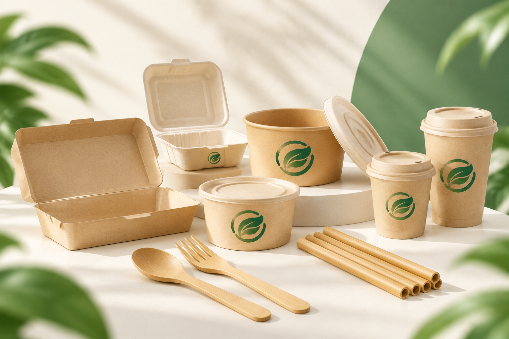

EcoBowl 750 ml
Mangkuk bagasse untuk soto, bakso, dan salad. Isi 50 pcs.
Rp75.000 (simulasi)
Lihat produkEcoWrap menyediakan kemasan makanan dan minuman dari bahan yang lebih bertanggung jawab, untuk coffee shop, restoran, dan UMKM kuliner.
Shop Products
Tiga pilihan yang paling sering dibutuhkan usaha kuliner. Harga adalah simulasi.
Mangkuk bagasse untuk soto, bakso, dan salad. Isi 50 pcs.
Rp75.000 (simulasi)
Lihat produk
Cukup untuk kopi dan teh panas atau dingin. Isi 50 set.
Rp65.000 (simulasi)
Lihat produk
Kotak makan kertas kraft untuk nasi dan lauk. Isi 50 pcs.
Rp95.000 (simulasi)
Lihat produkSemua kebutuhan kemasan takeaway dalam lima kategori.
Dirancang agar mudah dipilih, mudah dipesan, dan mudah dijelaskan kepada pelanggan.
Panduan memilih kemasan untuk makanan kuah, gorengan, dan minuman.
Tersedia dalam paket kecil untuk usaha baru hingga paket rutin.
Opsi cetak logo agar kemasan membawa identitas usahamu.
Setiap produk disertai cara pakai dan pengelolaan setelah dipakai.
Kemasan sekali pakai menghasilkan sampah dalam jumlah besar karena dipakai sebentar lalu dibuang. Memilih bahan yang bisa didaur ulang, dikomposkan, atau dipakai ulang membantu mengurangi beban sampah.
Pelanggan juga semakin memperhatikan cara usaha mengemas produknya. Kemasan yang tepat menunjukkan kepedulian usahamu.

Mulai dari paket kecil. Tidak perlu mengganti semua kemasan sekaligus, cukup pilih satu produk untuk dicoba.
 Wraps
Wraps Cutlery
Cutlery